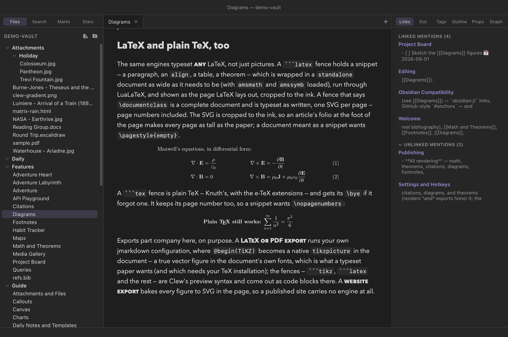
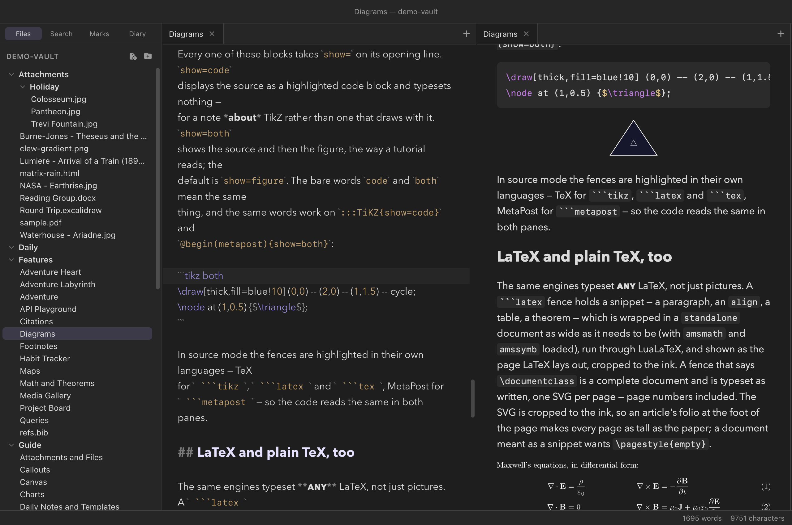
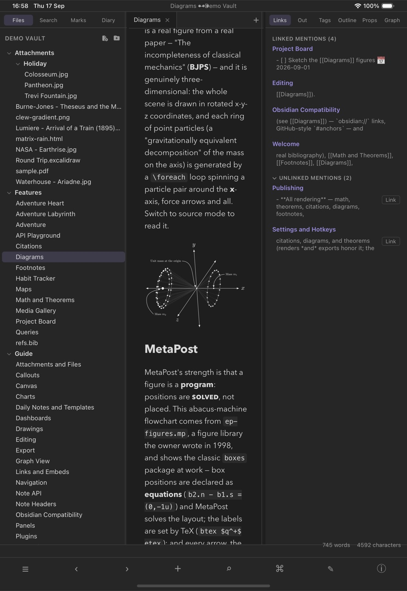

Reading mode
Diagrams
Clew draws diagrams from text in two quite different ways. Mermaid diagrams — flowcharts, sequence diagrams, and the rest of mermaid's catalogue — render instantly in the preview and follow the app's light and dark themes. TikZ and MetaPost figures go further: they are typeset by a real LaTeX — pdfTeX, LuaTeX, MetaPost and dvisvgm, compiled to WebAssembly and shipped with Clew — running in the preview itself. Publication-grade figures, living as plain text in a Markdown file, on any machine: nothing to install, and nothing written into your vault. The same engines typeset whole LaTeX snippets and plain TeX too, and every block can show its source instead of — or beside — its result. Typeset figures sit on the page like ink: black-on-transparent in the light theme, inverted to white-on-transparent in the dark one.
Mermaid
The quickest way to a diagram is the fence Obsidian users already know:
You write
```mermaid
graph LR
A[Welcome] --> B[Clew Design]
A --> C[Dialect Demo]
C --> B
B --> D{{Graph view}}
```Reading mode renders it client-side with a bundled copy of mermaid — no network involved. Anything mermaid can draw is available: flowcharts, sequence diagrams, state and class diagrams, Gantt charts, pie charts, and the rest of its steadily growing catalogue. A sequence diagram, for instance:
You write
```mermaid
sequenceDiagram
Editor->>Engine: note changed
Engine->>Preview: rendered HTML
Preview->>Preview: morphdom patch
```
The ```mermaid fence is not native jmarkdown — it is an
Obsidian-compatibility extension Clew adds to the engine, precisely so
vaults written in Obsidian render their diagrams unchanged. The
engine's own spellings work too, as a container directive or a block
environment:
You write (native forms)
:::mermaid
graph TD
idea --> note --> essay
:::
@begin(mermaid)
graph TD
idea --> note --> essay
@end(mermaid)
In the preview all three spellings look identical. The difference
appears at export time: the native forms can
be rasterized for LaTeX and PDF output through the mermaid CLI
(mmdc), while the compatibility fence renders in HTML
only and exports to LaTeX as nothing. If you expect a note to become a
PDF, prefer the native forms. (When mmdc is not
installed, a LaTeX export skips the diagram with a one-line hint
rather than failing.)
Mermaid diagrams are theme-aware: Clew initializes mermaid with a theme matching the app — its default light theme in light mode, its dark theme in dark mode — and when you switch themes, every diagram on the page is re-rendered from its source so the colors follow. You never end up with a light-background diagram floating on a dark page.

TikZ
TikZ is LaTeX's drawing language — the standard for figures in
mathematical and scientific publishing. A TikZ figure in a note is
written as a block environment holding an ordinary
tikzpicture:
You write
@begin(TiKZ)
\begin{tikzpicture}[scale=1.1]
\draw[thick,->] (0,0) -- (3,0) node[right] {$x$};
\draw[thick,->] (0,0) -- (0,2.2) node[above] {$y$};
\draw[blue,very thick,domain=0:2.8,smooth] plot (\x, {0.25*\x*\x});
\node[blue] at (2.2,1.9) {$y = x^2/4$};
\end{tikzpicture}
@end(TiKZ)
Note the capitalization: the environment is spelled
TiKZ. The container-directive spelling
:::TiKZ … ::: is equivalent. When the note renders, Clew
does what a LaTeX author would do by hand — wraps the picture in a
minimal standalone document, typesets it, and converts
the result to a vector SVG — except that all of it happens in the
preview, in WebAssembly. Nothing is approximated: the engines are
pdfTeX and LuaTeX themselves, the converter is dvisvgm
itself, and the figure in your note is the figure LaTeX draws, TeX
fonts, math labels and all. Shadings and gradients survive as SVG
gradients, patterns as patterns; a figure that asks for a
graph-drawing layout gets LuaTeX, which is fetched only when something
needs it.
One TikZ fact is worth knowing because it looks like a rendering bug:
the classic arrow tips — >=latex,
>=stealth and their primed forms — are not counted in
TikZ's bounding box, so an arrowhead at the edge of a picture sits in
the standalone border, exactly as it does in a PDF. The
default 2pt has room for them at the usual line widths; an
ultra thick line or an enlarged tip may want
border=4pt. The arrows.meta tips
(Latex, Stealth, as in the fence example
below) are counted, and never need the room.
The Obsidian fence
An Obsidian vault written against the TikZJax plugin keeps its figures
in ```tikz fences, and Clew renders those too — including
bodies in that dialect, which carry their own \usepackage
lines and \begin{document} instead of a
\documentclass. A fence body is not given the preloaded
libraries the environments get, so declare what the picture needs, as
a standalone document would:
You write
```tikz libraries="arrows.meta,positioning"
\node[draw,circle,fill=blue!15] (a) at (0,0) {$a$};
\draw[-{Stealth[length=3mm]},thick] (a) -- ++(2.4,0) node[draw,circle] {$b$};
```
The attribute tail after the language is Clew's; TikZJax has no
equivalent, so a fence that must stay readable in Obsidian should put
its \usetikzlibrary lines in the body instead. Unlike the
environments, a bare fence body without a tikzpicture is
wrapped in one for you.
A generous set of TikZ libraries is preloaded —
positioning, shapes, calc,
fit, matrix, trees,
graphs, arrows.meta, the
decorations families, intersections,
patterns, backgrounds, calligraphy,
and more — so typical figures need no preamble of their own. Every one of
them is in the bundle: a \usetikzlibrary that cannot be found
takes the whole figure down, so the packaging step refuses to ship a build
whose bundles are missing any of them.
MetaPost
MetaPost, the drawing sibling of TeX's METAFONT, is available the same way:
You write
@begin(metapost)
beginfig(1);
path tri; tri := (0,0)--(70,45)--(140,0)--cycle;
fill tri withcolor (0.55,0.5,0.8);
draw tri withpen pencircle scaled 1.2;
endfig;
end.
@end(metapost)
The source is run by MetaPost itself — version 2.11, the same program
as the command line's mpost — straight to SVG. A file
with several beginfig blocks produces several images, one
after another; and a bare body of drawing commands, without the
beginfig/end scaffolding, is wrapped into a
compilable program for you. Labels written as
btex … etex are typeset by real TeX: MetaPost normally
launches TeX as a subprocess for those, which a browser cannot do, so
the labels are collected and typeset in a single batched run instead —
a figure with forty labels costs one, and an unchanged figure none.
Unlike TikZ there is no ::: spelling —
@begin(metapost) is one of the two forms. The other is
Clew's own fence, the counterpart of the TikZ one (Obsidian has no
MetaPost convention to be compatible with):
You write
```metapost
z1 = (0,0); z2 = (60,34); z3 = (120,0);
z4 = 0.5[z1,z3]; % a point solved, not placed
draw z1 .. z2 .. z3 withpen pencircle scaled 1.2;
draw z2 -- z4 dashed evenly;
dotlabel.bot(btex $z_4$ etex, z4);
```LaTeX and plain TeX
The engines are a real LaTeX, so they can typeset more than pictures.
A ```latex fence holds a snippet — a paragraph, an
align, a table, a theorem, anything that goes between
\begin{document} and \end{document} — and
Clew wraps it in a standalone document whose page is as
wide as the content needs (the class's varwidth option,
so a long paragraph wraps at a normal line width and a short formula
gets a page its own size), loads amsmath and
amssymb, typesets it with LuaLaTeX, and shows the result
cropped to the ink. A fence that says \documentclass is a
complete document and is typeset exactly as written, one SVG per page,
the pages stacked — page numbers included, since a document that wants
its pages as pages must get them. That has one consequence worth knowing
before it looks like a bug: each SVG is cropped to the ink, and an
article's folio sits at the foot of the page, so a nine-line document
with the default page style comes out as tall as the paper — the text at
the top, the page number at the bottom, and the note's next paragraph
below all that empty space. A document meant as a snippet wants
\pagestyle{empty} in its preamble (and
\thispagestyle{empty} after \maketitle,
which puts a folio back on the title page).
You write
```latex
The quadratic formula, for reference:
\begin{align}
x &= \frac{-b \pm \sqrt{b^2 - 4ac}}{2a}
\end{align}
```
A ```tex fence is plain TeX — Knuth's, with the e-TeX
extensions — and gets its \bye if it forgot one. Like a
LaTeX document it keeps its page number, which plain TeX sets at the
foot of the page: a one-line snippet without \nopagenumbers
comes out as tall as its page. A
```tex body that turns out to say
\documentclass is treated as the LaTeX it is rather than
failing on an undefined command. The packages=,
preamble= and border= attributes below apply
to a wrapped ```latex snippet the way they apply to a
TikZ body; on a complete document they mean nothing and are ignored.
You write
```tex
\nopagenumbers
\centerline{\bf Plain \TeX, $\sqrt{2}$ and all.}
```
align of
Maxwell's equations from a ```latex fence, typeset by
LuaLaTeX in the page, and a line of plain TeX from a
```tex fence under it.
LuaTeX is the engine for both fences — LuaLaTeX for
```latex, plain LuaTeX for ```tex — which
means the first such snippet on a machine fetches LuaTeX (about
12 MB, once) and costs a little more per run than pdfTeX: a short
snippet is a quarter of a second against pdfTeX's eighth.
engine=latex on a ```latex fence asks for
pdfTeX instead, and engine=plain on a ```tex
fence for the e-TeX format.
In the note's own typeface
A figure's text is Latin Modern, TeX's own face, and for a diagram that
is usually right. When it is not — a labelled picture that should read
as part of the prose around it, a paragraph typeset for its layout
rather than for TeX's look — font=note on the opening
line sets the figure in the face the note itself is read in:
You write
```tikz font=note
\node[draw,rounded corners] (a) at (0,0) {a labelled node};
\node[draw,rounded corners] (b) at (4,0) {in the note's face};
\draw[->,thick] (a) -- node[above] {\textit{as the prose}} (b);
```
```latex font=note
A paragraph in the note's face: regular, \textbf{bold}, \textit{italic}
--- with maths, $e^{i\pi} + 1 = 0$, still in Latin Modern.
```
Three things happen behind that word. The figure moves to LuaTeX, the
one engine here that loads OpenType fonts, and its preamble gains a
fontspec block naming the face's files. The face is the
one your platform gave the app — Avenir Next on a Mac, Segoe UI on
Windows, Cantarell where GNOME has its static build installed — read
from the system's own font folder when Clew starts, one file per style
(regular, bold, italic, bold italic), never shipped, and handed to the
engine as bytes. And the SVG comes out as text: rather than
tracing each glyph as an outline, dvisvgm embeds a subset of the same
font file and emits real text runs, so the figure is drawn by the
browser's own text renderer in the same face as the paragraph above
it — selectable, and crisp at any size. Mathematics stays in Latin
Modern, as it should; font=note is about the words.
It works on ```tikz, on ```latex, on
:::TiKZ and the @begin(TiKZ) environment, on a
complete document (the block goes in after its
\documentclass), and on ```tex. Plain TeX has
no fontspec, so there the face is loaded the plain way — luaotfload's
own \font lines — and put where plain TeX keeps its
fonts: {\bf …} and {\it …} switch to the bold
and italic faces, -- and --- still make their
dashes, and mathematics stays in Computer Modern. MetaPost figures
ignore it — their labels are set by the TeX named in tex=.
font=note
figure while you are editing it re-renders once, from the top, to
pick the bundle up — you will see the page redraw.
A complete document that loads fontspec itself is
recognised too and gets the same bundle and the same font files; name
them as Clew does, NoteFont-Regular.ttf,
NoteFont-Bold.ttf, NoteFont-Italic.ttf and
NoteFont-BoldItalic.ttf, with Path=./, and add
fonts=woff2 on the fence for text rather than outlines.
Any face can be asked for by file name that way, but only those four
files are there to find: luaotfload's font database knows the bundled
fonts alone, so a system face cannot be named by family. To have a
font=note figure drawn as outlines after all, add
fonts=paths beside it.
Showing the source instead
Every block on this page — the four fences, :::TiKZ, and
the two environments — takes show= on its opening line:
| Opening line | Renders |
|---|---|
```tikz (the default, show=figure) | The typeset figure |
```tikz show=code | The source as a highlighted code block; nothing is typeset |
```tikz show=both | The code block, then the figure — source above result, the way a tutorial reads |
The bare words code, both and
figure mean the same as their show= forms,
so ```latex code reads naturally on a line about LaTeX
code. On the environments and the directive the attribute goes in the
usual braces: @begin(metapost){show=both},
:::TiKZ{show=code}. A code block shown this way is an
ordinary fenced code block to the rest of Clew — highlighted by
highlight.js in the reading pane, with its line stamped for scroll
sync — and MetaPost, which highlight.js does not know, is given a
grammar of Clew's own so it does not come out as plain text.
In the source pane the same fences are highlighted with their own
grammars — TeX for ```tikz, ```latex and
```tex, MetaPost for ```metapost — so a
figure's code reads the same on both sides of a split; see
Dialect-aware highlighting.

```tikz both
fence in source mode, tokenized as TeX, and the same block in reading
mode — its code, then the figure it draws.Typesetting and caching
Typesetting on every keystroke would be wasteful, so a rendered figure is cached by its content. The source and its attributes are hashed, and the resulting SVG is kept in the preview's own store, keyed by that hash. Edit the prose around a figure and the picture is not touched at all; edit the figure and only that one is typeset again. Close the app, reopen it a week later, and the figures come back from the cache without an engine starting.
Nothing goes into your vault. Earlier versions of Clew shelled out to
your TeX installation and cached the SVG in TiKZ/ and
MetaPost/ folders beside the note; the preview no longer
writes or reads those. If a vault of yours has them, they are ordinary
folders of SVG files and can be deleted — though a jmarkdown run on
the command line, or a single-note HTML export (below), will still use
them.
Attributes tune both the figure and its embedding, written in the environment's attribute block or after the fence's language. The first two are the presentation; the rest are handed to the engine:
| Attribute | Effect |
|---|---|
scale=1.5 | Scale the rendered figure (a CSS transform) |
width=45% | Make the figure that wide instead, scaling it to fit |
libraries="calc,fit" | TikZ: \usetikzlibrary for these |
packages="booktabs" | TikZ and LaTeX snippets: \usepackage for these |
preamble="…" | TikZ and LaTeX snippets: extra preamble lines, verbatim (options and all) |
border=4pt | TikZ and LaTeX snippets: the standalone border (default 2pt) — the white space around the picture, which the SVG keeps for a picture and crops for a snippet |
font=note | TikZ and LaTeX: set the figure's text in the note's own typeface — LuaTeX, fontspec, real text in an embedded subset (above) |
fonts="paths" | TikZ and LaTeX: paths (the default: glyph outlines) or woff2 (text in an embedded font subset — what font=note chooses) |
gdlibraries="layered" | TikZ: \usegdlibrary — graph drawing, which selects LuaTeX |
engine="lualatex" | TikZ and LaTeX: force the engine (latex, lualatex, plain, luatex; TikZ defaults to auto, ```latex to lualatex, ```tex to luatex) |
tex="latex" | MetaPost: which TeX sets btex … etex labels (latex, plain, none) |
prologues=3 | MetaPost: the prologues value (default 3) |
alt="…" | An accessible label for the figure |
show-console | Keep the engine's log visible under the figure |
cache="off" | Typeset this figure every time, cache nothing |
show=code show=both | Show the source instead of the figure, or before it (above) |
You write
@begin(TiKZ){scale=1.5}
…
@end(TiKZ)
```tikz libraries="arrows.meta" border=4pt
…
```
The old embed and empty-cache attributes no
longer mean anything — the SVG is always inline, and a cache keyed by
content is never stale — so they are accepted and ignored rather than
reported as errors in a note you wrote years ago.
What is in the box, and what is not
The engines ship with Clew: MetaPost 2.11, pdfTeX, LuaTeX and
dvisvgm, all from TeX Live 2025 and compiled to WebAssembly,
together with the fonts and macro packages they read — Computer
Modern, Latin Modern, the 35 PostScript fonts, PGF/TikZ with every
library it ships, pgfplots, tikz-cd, amsmath, xcolor,
standalone, and more. There is nothing to install and
nothing on your PATH to find, on any of the three
platforms; a figure renders the same on a machine that has never seen
TeX. LuaTeX is the one piece loaded on demand, when a figure asks for
graph drawing or \directlua, or a note holds a
```latex or ```tex fence.

What that leaves out is worth knowing, because it is the difference between this and a full local installation:
- Fonts: the bundled ones, plus the note's. Text
in figures is set in the Type 1 faces above, and a figure can
ask for the note's own face with
font=note, or loadfontspecin a complete document. What it cannot do is name an arbitrary installed font by family: only the note's face is handed over, as files.unicode-math's maths font is not bundled. - The bundled packages, not all of CTAN. A figure needing something outside the bundle fails with TeX's own "file not found" in its error box rather than silently dropping it.
- No
\write18, no PDF output, no Ghostscript. A figure is typeset and converted to SVG; nothing shells out.
When a figure fails for the ordinary reason — a typo in the picture —
its place in the note is taken by an error box carrying TeX's own
diagnostics, with the line number in your source and the log beneath
it. Add show-console to keep that log visible even when
the figure succeeds.
Diagrams in export and publishing
In LaTeX and PDF export, TikZ figures are
not embedded as images at all — the tikzpicture source
passes through natively, so the print figure is drawn by the same
engine as the rest of the document, in the document's own fonts. That
path is unchanged, and it is the one place a TeX installation still
matters: an export runs your own jmarkdown configuration and your own
lualatex, mpost and
dvisvgm — which is also why a single note exported to
HTML still uses the TiKZ/ and MetaPost/
folders beside it, and why the fences — ```tikz,
```metapost, ```latex and
```tex, which jmarkdown itself does not know — export to
LaTeX as code blocks. (show= is likewise the preview's:
an export of a @begin(TiKZ){show=code} block still draws
the picture.)
The reading-view PDF waits for every figure and prints what the screen shows. When a whole vault is published as a website, each figure is typeset once during the export and the SVG is written into the page, so the published site carries no engine at all — a visitor loads a few kilobytes of vector graphics instead of 74 MB of TeX, and needs no TeX on the server either.
```mermaid renders in Obsidian
itself — that is why Clew supports it — and ```tikz
renders there with the TikZJax plugin installed, which is the shape
Clew's fence follows. Clew typesets those bodies with a real LaTeX
rather than TikZJax's frozen memory image, so pictures that need a
library or a package work here and may not there; the fence's
attribute tail is Clew's own and Obsidian ignores it. The rest of
this chapter is Clew-only: :::mermaid,
@begin(mermaid), @begin(TiKZ),
:::TiKZ and @begin(metapost) appear in
Obsidian as the literal block text, and ```metapost,
```latex and ```tex as ordinary code
blocks — as does a ```tikz show=code fence, since
TikZJax knows nothing of the attribute tail and renders it anyway.
Reference
| Diagram | Syntax | Rendered by | Needs |
|---|---|---|---|
| Mermaid (Obsidian-compatible) | ```mermaid … ``` | Bundled mermaid, in the preview; not exported to LaTeX | Nothing |
| Mermaid (native) | :::mermaid … ::: or @begin(mermaid) … @end(mermaid) | Bundled mermaid; rasterized via mmdc for LaTeX/PDF | mmdc for print only |
| TikZ (native) | @begin(TiKZ) … @end(TiKZ) or :::TiKZ … ::: | Bundled pdfTeX/LuaTeX + dvisvgm, in the preview; native tikzpicture in LaTeX export | Nothing (a TeX installation for LaTeX export) |
| TikZ (TikZJax-compatible) | ```tikz … ``` | The same engines; exports to LaTeX as a code block | Nothing |
| MetaPost (native) | @begin(metapost) … @end(metapost) | Bundled MetaPost 2.11 → SVG, in the preview | Nothing |
| MetaPost (fence) | ```metapost … ``` | The same engine; Clew's own spelling | Nothing |
| LaTeX snippet or document | ```latex … ``` | Bundled LuaLaTeX + dvisvgm, in the preview; a snippet wrapped in standalone, a document as written; a code block in LaTeX export | Nothing (LuaTeX fetched once) |
| Plain TeX | ```tex … ``` | Bundled LuaTeX + dvisvgm, in the preview; a code block in LaTeX export | Nothing (LuaTeX fetched once) |
| Attribute (every block) | Effect |
|---|---|
show= | figure (default), code, or both; bare code / both mean the same |
scale= | Scale the rendered figure |
width= | Set an explicit width, scaling to fit |
libraries= packages= preamble= border= gdlibraries= engine= | TikZ (and, bar the libraries, a LaTeX snippet): what the document loads, and which engine typesets it |
tex= prologues= | MetaPost: the label engine and the prologues value |
alt= show-console cache="off" | Accessible label; keep the log visible; skip the cache |
embed empty-cache | Old attributes, now accepted and ignored |
See also
- How rendering works — the render pipeline, and why cached figures survive re-renders untouched.
- Math and theorems — the same TeX toolchain, pointed at equations.
- Interactive maps — the other kind of rendered block, live rather than compiled.
- Charts — bar, line and pie charts from a fenced block of YAML, via the demo vault's Charts plugin.
- Exporting notes and Publishing as a website — where your diagrams go next.
- The canvas — for freehand diagrams drawn by hand rather than declared in text.